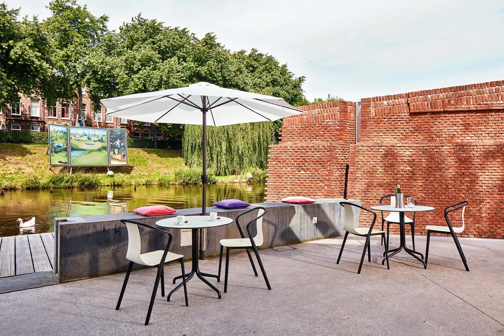

We'd love to hear from you
Actually wanted to book a table or request a party? Sort that out below with one click, so you don't have to wait for a reply.
On the singel, next to the city wall
Opening hours
Want to work with us?
We're regularly looking for extra hands in service and the kitchen: a young team, in the heart of the city, working with a view of the water. Email Robbert van Elk or Maaike van Eldik at info@bolwerkdenbosch.nl.
What guests ask us most often
Can I book a table on the terrace?
No, the terrace is deliberately walk-in only: whoever arrives claims the best spot available. Bookings apply to a table inside.
Do I need to book?
No, booking is never required: you're always welcome to walk in, even for dinner. Online booking is there for anyone who wants to be sure of a table inside.
Can I book for more than 8 people?
From 9 people, we confirm personally. Send a request via the group request form, and Robbert or Maaike will get in touch within two working days.
Why can I only book for lunch between 11:30 and 15:30?
In that window we keep the tables inside free for lunch guests. Coming for drinks or cake? You're simply welcome via the walk-in, or book a drinks slot from 15:30 onwards.
Is Bolwerk wheelchair accessible?
Yes, the restaurant and the terrace are wheelchair friendly. Children are more than welcome too.
Are there vegetarian and vegan options?
Yes, a wide choice: from vegetarian tomato soup and vegetable croquettes to sformatino, tortelloni and vegan bitterballen. The team is happy to answer questions about allergens at the table.
Can I arrive by boat?
Yes, you can moor at our own jetty. Several canal tours also use the jetty as a boarding and drop-off point.
How do I get there by public transport?
Bolwerk is about five minutes' walk from 's-Hertogenbosch station, at Sint Janssingel 25.